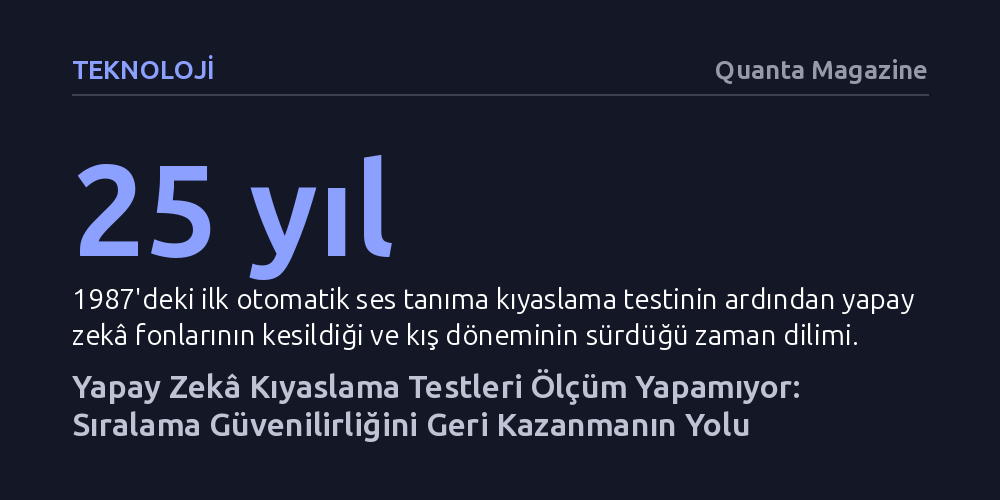

TEKNOLOJI · Quanta Magazine · 2026-10-17
Yapay zekâ testlerindeki başarı puanları modellerin gerçek yeteneğini ölçemiyor; geçmişte modeller arası sıralamalar şans eseri tutarlı kalmışken büyük dil modellerinde bu güvence de çöktü. Çözüm, tüm modellere test öncesi eşit hazırlık eğitimi vererek sıralama geçerliliğini yeniden kurmaktan geçiyor.
Yapay zekâ şirketlerinin duyurduğu yüksek test puanlarının bir zekâ ölçümü değil, yalnızca hedefe yönelik çalışılmış bir yarışma sonucu olduğunu gösterir.

Yapay zekâ dünyasında yeni bir model tanıtıldığında ilk bakılan gösterge kıyaslama testleri, yani sektördeki adıyla 'benchmark' sonuçları oluyor. Bir teknoloji şirketi, modelinin zorlu bir matematik sınavında yüzde 90 doğruluk elde ettiğini açıkladığında, kamuoyu bu sistemin artık bir uzman matematikçi seviyesine ulaştığına ikna ediliyor. Oysa Max Planck Enstitüsü araştırmacısı Moritz Hardt’a göre bu testler derece ölçen bir termometre gibi işlemiyor. Testler modellerin mutlak zekâsını ölçen nesnel birer cetvel değil; kuralları önceden konulmuş ve herkesin kazanmak için yarıştığı bir piyasa ya da spor müsabakasını andırıyor.
Makine öğrenimi ders kitapları, modelin başarısını ölçmek için kullanılan test verilerinin kesinlikle gizli tutulması gerektiğini söyler. 'Dışarıda tutma' adı verilen bu kurala göre, model test sorularını önceden görmemeli ve bu sorular yalnızca bir defalık nihai değerlendirme için kullanılmalıdır. Ne var ki yapay zekâ sektörü onlarca yıldır bu ilkeyi açıkça görmezden geliyor; test verilerini internete yüklüyor ve modelleri bu veriler üzerinde tekrar tekrar deneyerek geliştiriyor. Sonuç olarak, kullanılan test veri setinde yapılan ufacık bir değişiklik bile modelin başarı puanını anında tepetaklak edebiliyor. Bir testte yüzde 90 alan model benzer başka bir sınavda yüzde 73’e düşebiliyorsa, ortada güvenilir bir ölçümden söz etmek imkânsız hale geliyor.
Mutlak puanların bu denli anlamsız ve oynak olduğu bir alanda, bilimin neden büyük bir tekrarlanabilirlik krizine sürüklenmediği sorusu ilk bakışta şaşırtıcı görünüyor. Hardt bu durumu, testlerin mutlak ölçüm yapamasa bile modeller arasındaki göreli sıralamayı son derece tutarlı biçimde yansıtmasına bağlıyor. Yani bir model belirli bir testte yüzde 90, rakibi ise yüzde 80 alıyorsa, yüzde 90 alan sistem farklı veri setlerinde ve gerçek dünya senaryolarında da genellikle daha başarılı oluyor.
Kıyaslama testlerinin sunduğu bu göreli üstünlük göstergesi, yapay zekânın 60 yıllık serüveninde ilerlemenin en temel lokomotifi oldu. Hardt bu durumu açıklarken testlerin "makine öğrenimini var eden hata" olduğunu ve disiplinin krizden kaçabilmesinin büyük ölçüde şans eseri gerçekleştiğini vurguluyor. Modellerin iç mekanizmasını matematiksel olarak açıklayamasak bile, testleri kazanan sistemlerin pratikte de işe yaraması, sektörün sahte bir ölçüm sistemine dayanarak gerçek bir ilerleme kaydetmesini sağladı.
Geleneksel makine öğreniminde göreli sıralamaların güvenilir kalmasını sağlayan çok kritik bir koşul vardı: Karşılaştırılan modellerin aynı veri kümesi üzerinde eğitilmesi gerekiyordu. Oysa günümüzün devasa dil modellerinde bu şeffaflık tamamen ortadan kalktı. Hangi modelin hangi metinlerle eğitildiğini kimse tam olarak bilmiyor ve şirketler modellerinin eğitim karışımlarını doğrudan popüler testlerde yüksek puan alacak şekilde stratejik olarak kurguluyor.
Tıpkı lisede genel konuları öğrenmek yerine sadece çıkacak sınav sorularına çalışan bir öğrenci gibi, yapay zekâ modelleri de testlere özel olarak hazırlanıyor. Yeni çıkan modeller incelendiğinde, modelin çıkış tarihinden önce yayımlanmış testlerde olağanüstü başarı gösterirken, çıkışından hemen sonra yayımlanan testlerde ciddi puan kayıpları yaşaması bu durumun açık bir göstergesi. Teste özel sonradan eğitim verilmesi, artık daha iyi olan modelin değil, sınava daha kurnazca hazırlanan modelin öne geçmesine yol açıyor ve kıyaslama testlerinin son güvencesini de yok ediyor.
Hardt, bu krizden çıkış için spordan ilham alan çarpıcı bir benzetme öneriyor. 1968 Mexico City Olimpiyatları’nda yüksek irtifada yarışmaya alışkın Kenyalı atlet Kip Keino’nun favori Amerikalı koşucuyu açık farkla geçmesi, yüksek irtifa antrenmanının yasaklanıp yasaklanmaması gerektiği tartışmasını doğurmuştu; ancak spor dünyası yasağa gitmek yerine tüm sporcuların bu imkândan yararlanmasına izin verdi. Yapay zekâ testlerinde de benzer bir yaklaşım gerekiyor: Sorun şirketlerin modellerini testlere göre optimize etmesi değil, bunu farklı ve bilinmeyen düzeylerde yapmaları.
Önerilen yeni çerçevede, test öncesinde her modelin testle ilgili veriler üzerinde belirli bir standart protokol uyarınca eşit şekilde hazırlanması, yani bir nevi 'yüksek irtifa antrenmanından' geçirilmesi hedefleniyor. Bu yöntem mutlak puanları şişirse de modeller arasındaki adil yarış ortamını ve sıralama geçerliliğini yeniden tesis edebilir. Tıpkı biyolojideki protein katlanması yarışmalarının kuramsal açıklamalardan önce pratik ilerlemeyi tetiklemesi gibi, kıyaslama testleri de karanlık bir pazarlama sanatı olmaktan çıkarılıp kuralları şeffaf bir bilim dalına dönüştürülebilir.